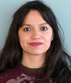

Resume
Summary of Qualifications
- Seven years of administrative support experience
- Higher education experience
- Business, technology, and communications background
- Knowledge of Raiser's Edge, Banner, Salesforce
- Bilingual English/Spanish
Education/Certification
Bachelor of Science in Communication
Illinois Institute of Technology
Chicago, IL
Graduation: 2021
Associate in Arts
Business Administration and Office Technology
Morton College
Cicero, IL
2009
Work Experience
Administrative Assistant - Office of Institutional Advancement & Alumni Relations
Illinois Institute of Technology
Present
- Provide direct support to members of the Alumni Relations, Annual Giving, & Communications Team
- First line of contact and response for general alumni and annual/renewable
- Updated and mainted accuracy of all materials and data, including: Alumni Board documents;class notes; volunteer data tracking;
submitting alumni information updates for RE; and organizing and tracking event giveaway inventory.
- Manage the calendar and provide support for the Associate Vice President.
Administrative Assistant for the Department of Psychology
Illinois Institute of Technology
2016-2017
- Collaborated with the Chair and Coordinator in carrying out the daily functions and critical goals of the department’s office.
- Supported program directors and faculty in the planning of department-related events and assisted faculty with program applications and other projects.
- Maintained electronic files and reports of program applications; handled room reservation requests from faculty and students, and placed requests for facility services.
Financial Counselor/Cashier
Illinois Institute of Technology
2016-2017
- Collaborated with the Chair and Coordinator in carrying out the daily functions and critical goals of the department’s office.
- Supported program directors and faculty in the planning of department-related events and assisted faculty with program applications and other projects.
- Maintained electronic files and reports of program applications; handled room reservation requests from faculty and students, and placed requests for facility services.
Volunteer
Spanish Interpreter
Loyola University, Health Justice Department
ESL & Literacy Tutor
Project CARE